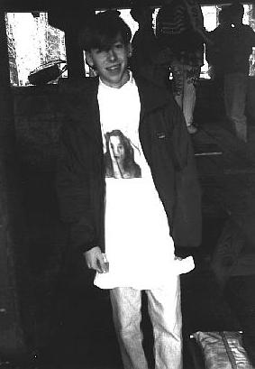
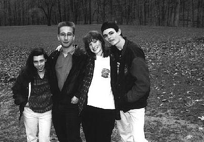
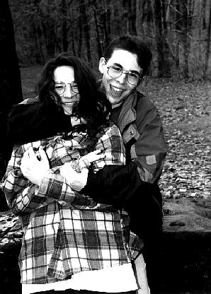
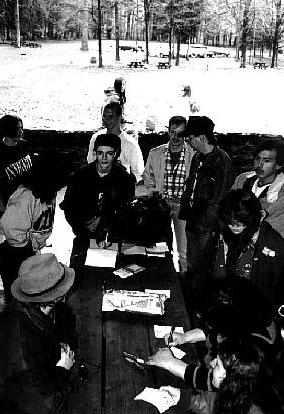
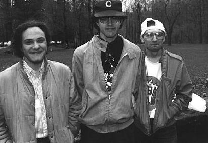
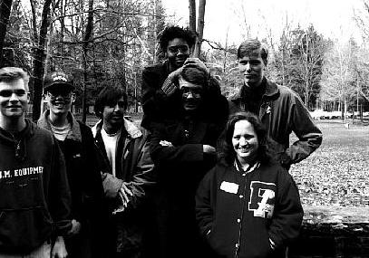
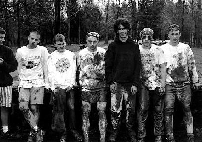
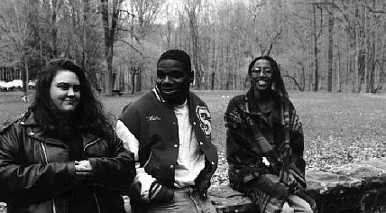

<<< PHOTOS: APRIL 1994 >>>

Kevin H. (LiQUiD)



unknown, but I think that trio on the right is Brian McCann (Werecow), Scott Berringer (bear) and Louis Vallos (louis). Mike Kuehn (Admiral) is the guy behind the guy at the sign in sheet (left of Werecow).

DrWho, unknown, unknown

unknown, unknown, Louis V. (louis), Anastazia, Matt S. (GroundOut), unknown, unknown

Scott B., Mike K. (Admiral), unknown, Nate F., unknown, Brian F., unknown

Angeldust, Mike R. (register), Samantha T. (saint)